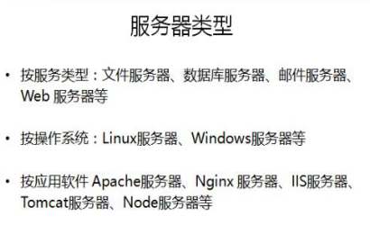

1.

用哪个软件就是什么服务器，可以装多个软件
面试问公司使用哪种服务器，一般回答apache或linux
IIS--微软系统自带服务器
面试问使用哪种数据库：mysql--淘宝也是用这个
2、记住HTTP服务器

3.

两者有本质区别：
前端后端--针对职位划分
前台后台--针对网站性质划分
4.

- 域名是用来替换IP地址的---IP地址难记
6.Ping命令，检查IP是否畅通

PHP基础
入门
文件以.php后缀结尾，所有程序包含在<?php /** 这里是代码 **/ ?>

禁止使用中文目录和中文文件名
见代码示例6-1.php
变量
1、变量以$开头 字母/数字/下划线 不能以数字开头
2、大小写敏感（区分大小写）
见代码示例6-2.html
数据类型
字符型、整型、浮点型、布尔型、数组、对象、NULL
单引号&双引号区别（了解即可）
索引数组、关联数组（了解即可）
索引数组：
$arr=array(1,2,3);
调用：$arr[0];
关联数组：
$arr=array(‘name’=>’itcast’,’age’=>18);
print_r($arr);
echo $arr['name'];
二维数组：（数组里套数组 ）
---js中
var arr=[1,2,3];---一维
var arr=[[1,2],3];---二维数组
--PHP中

见代码示例6-3.html
内容输出
echo：输出简单数据类型，如字符串、数值---相当于js中的document.write
print_r()：输出复杂数据类型，如数组
var_dump()：输出详细信息，如对象、数组（了解）--所有类型
array
0 => int 1
1 => int 2
2 => int 3
见代码示例6-4.html
运算符
基本与Javascript语法一致
. 号表示字符串拼接符，Javascript中为+号，js中.为访问属性的符号
见代码示例6-5.html
函数
与Javascript基本一致
函数名对大小写不敏感
默认参数（了解即可）
function sayHi($name='obj'){//---$name-‘obj’设置默认参数，不传入参数，默认使用这个参数，传入参数则使用这个传入的参数
function sayHi($name='obj'){
echo "hello".$name;
}
// sayHi('小明');
sayHi();
见代码示例6-6.html
分支、循环语句****
与Javascript基本一致
eg1:拼接字符串
<?php
header('Content-Type:text/html;charset=utf-8');
// $num=10;
// if ($num<=16) {
// echo "tooyoung";
// }
// else{
// echo "come on";
// }
$arr=array('a','b','c','d');
//计算数组长度
$len=count($arr);
// echo $len;
for ($i=0; $i < $len; $i++) {
echo $arr[$i];//abcd
}
?>
foreach()遍历数组--可以遍历索引数组，也可以遍历关联数组
//关联数组--for in无法遍历--for each
$arr=array('name'=>'aha','age'=>10);
foreach ($arr as $key => $value) {
// echo $key;
echo $arr[$key];
echo $value;
}
//索引数组-for in和for each都可以遍历
$arr=array('a','b','c','d');
foreach ($arr as $key => $value) {
// echo $key;
echo $value;
}
见代码示例6-7.html
echo "<h1>天了噜</h1>";
echo'<br>';
//有样式---echo的内容就是浏览器得到的内容
混合输出：
<?php
echo "hello";
?>
<!DOCTYPE html>
<html lang="en">
<head>
<meta charset="UTF-8">
<title>Document</title>
</head>
<body>
<?php
echo "hello2";
?>
<script>
document.write('aaaaa');
</script>
</body>
</html>
输出结果：
hello hello2aaaaa
PHP文件中允许混合输出，遇到php标签即识别，PHP标签结束自动输出下面的标签
文件引入
include、require
表单处理
表单name属性的是用来提供给服务端接收所传递数据而设置的
表单action属性设置接收数据的处理程序
表单method属性设置发送数据的方式
当上传文件是需要设置 enctype="multipart/form-data"，且只能post方式
$_GET接收 get 传值
$_POST接收 post 传值
$_FILES接收文件上传
常用PHP函数
in_array() 是否在数组中
count() 计算数组长度
array_key_exists ()检测数组中是否存在key
file_get_contents读取文件
...还有很多
应用实例
1、用户登录
2、动态网站